模组只是起点
走到原作没写的地方，守秘人会补出新的人物、线索和支线；想严格按原作玩，可以关掉即兴。
Ph'nglui mglw'nafh Cthulhu R'lyeh wgah'nagl fhtagn.
《克苏鲁的呼唤》第 7 版 · AI 守秘人
AI 担任守秘人的中文跑团游戏。你扮演调查员，用自然语言行动、交谈和探索；可以一个人玩，带上 AI 同伴，也可以让朋友用浏览器加入同一场故事。
《追书人》从早班火车驶入阿诺兹堡开始。委托人托马斯住在小镇尽头的公墓旁，你可以先向站务员问路、在餐馆吃早饭，或者去图书馆翻旧报纸。在输入框写下想做的事，守秘人（KP，跑团的主持人）判断要不要检定、花多少时间、能发现什么，再把结果讲给你听。

走到原作没写的地方，守秘人会补出新的人物、线索和支线；想严格按原作玩，可以关掉即兴。
每个人在哪、手里有什么、说过和答应过什么都有记录。撞开的门、受过的伤，都会留到下一次遭遇。
NPC 会帮忙、隐瞒、撒谎、抢先一步，也会被说服或打动。不在场的人按自己的日程行动。
检定、孤注一掷、理智与疯狂、战斗和追逐按第 7 版规则结算，骰子由物理模拟投出。
照片转成真彩字符画，画面随时间、天气和剧情变化；配乐由程序边玩边写。
导入自己的模组，AI 整理成可以直接玩的版本；也可以只给一句设定，写一本原创模组。
房主开好房间，把网址发给朋友，对方用浏览器就能加入，不用安装，也不用配置模型。分头调查时各组同时推进，各自看到所在现场的叙述；个人观察、私信和手稿只发给实际的收件人。各组共用同一个世界：同一个 NPC 不会同时出现在两处，一组拿走的东西，另一组就找不到了。
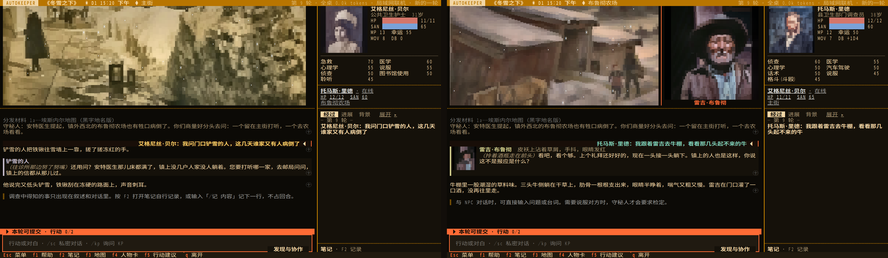
检定结果要不要公开、要不要接受队友替你提的行动，都由你自己决定。有人断线时，AI 暂时替他行动，重连后交还。每个座位可以是真人，也可以交给 AI 调查员。
模组里的照片和插图会转成真彩字符画。天色随游戏时间变化，雨、雪、雾叠在画面上；在场人物的小像嵌在画面一角。按 Ctrl+A 换画法：
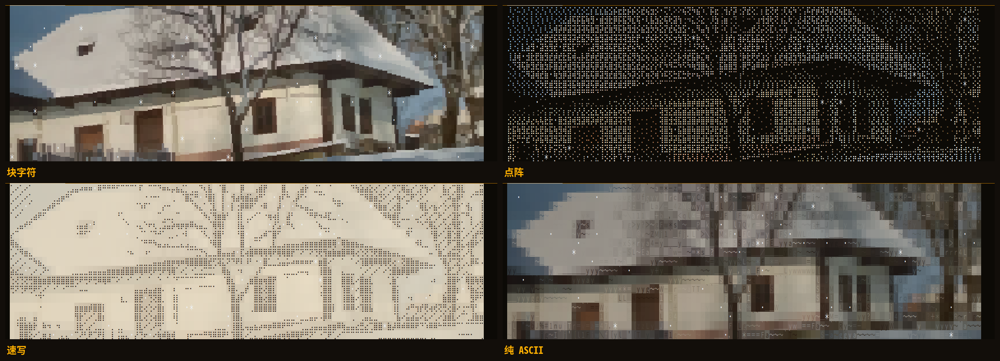
同一个地点的画面会随剧情换版本：某人来了、线索找到了、天黑了，画面就换成相应的版本，构图不变，事情过去再换回来。编译时还会给值得细看的东西准备特写。这些版本由 AI 照原图绘制，需要本机装有 Codex。
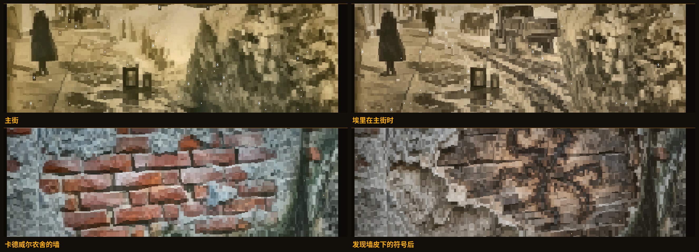
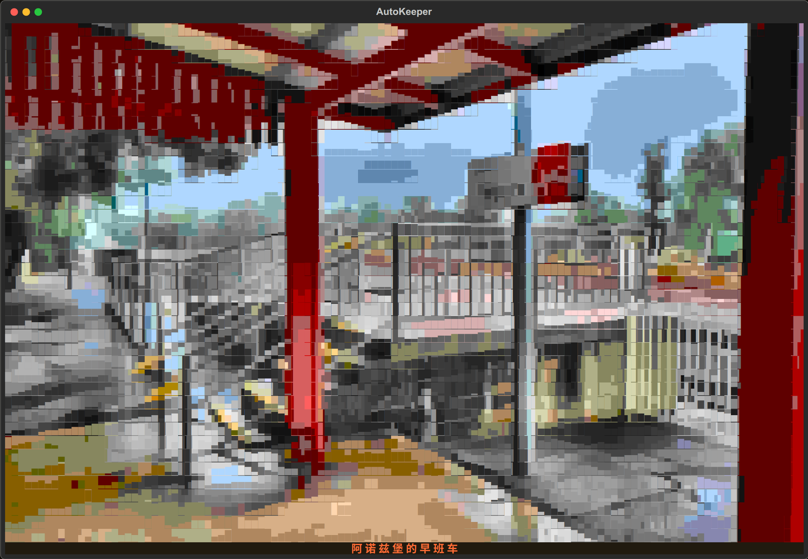
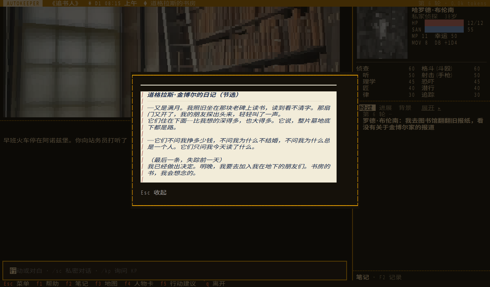
配乐不是预先录好的曲子，而是程序边玩边写。守秘人叙述的气氛变了，音乐在下一小节跟着变；战斗、追逐和理智损失由游戏直接处理，室外和夜晚的音色也不同。每局有自己的调性和主题，常用 7/8、5/8 这样的奇数拍，弦乐、钢琴、竖琴、八音盒、管风琴、玻璃琴、长笛、大提琴、圆号、马林巴轮流出现。终端和浏览器都能播放。
调查和打听时：钢琴与拨弦在奇数拍上推进。
不该看见的东西出现时：男声吟唱，长音压低。
追逐和战斗时：铜管领奏，136 拍每分。
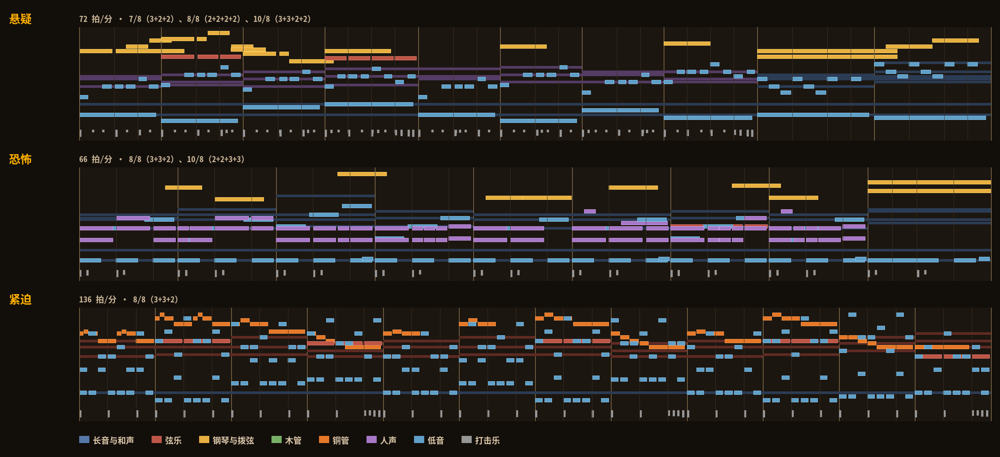
需要检定时，你亲手掷 3D 物理模拟的十面骰。失败后可以花幸运，也可以说明新的做法孤注一掷，由裁定员复核实际耗时和后果。理智损失、临时与不定性疯狂、重伤与濒死都按规则结算；手上有规则书的话，裁定员会按页查原文，施法的魔法值与理智消耗也照条目原文结算。
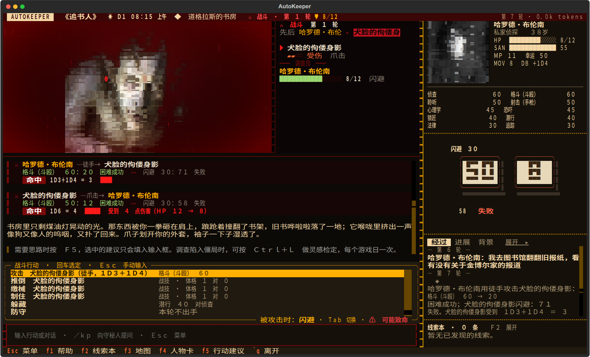
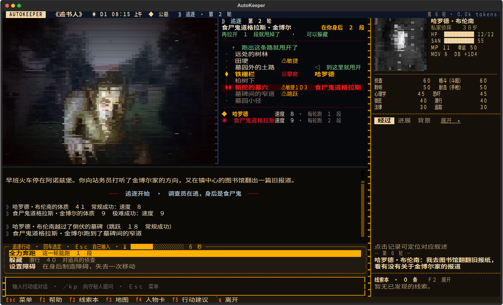
把 PDF、Word、Markdown、纯文本或 ZIP 拖进「导入模组」。AI 读完原文，整理出人物的知识与动机、线索的发现条件、事件日程、房间与平面图、战斗数值和追逐路线，保留原有的插图和手稿，再对照原文复核一遍。年代照原文，不限于 1920 年代；也可以只给一句设定，写一本原创模组：
autokeeper generate "1931 年上海，一张没有标签的唱片" --id changpian游戏自带《追书人》《冬雪之下》《有些人油盐不进》三本模组，第一次玩推荐单人入门的《追书人》。
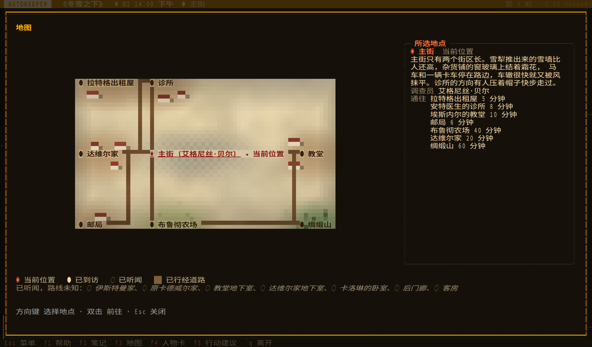
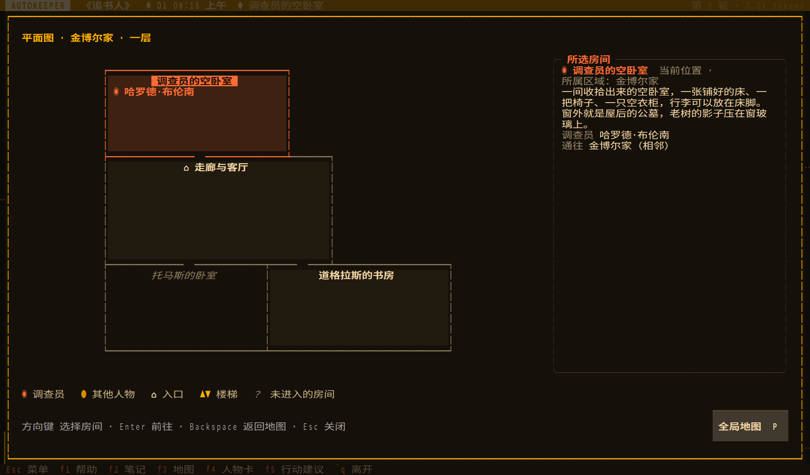
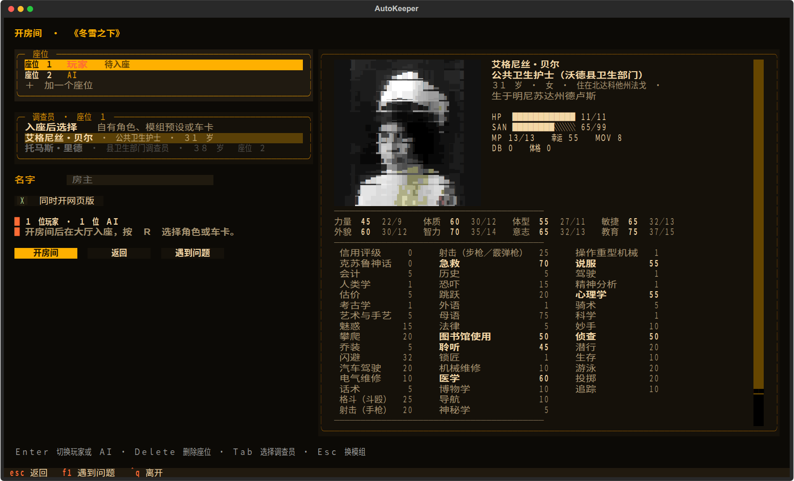
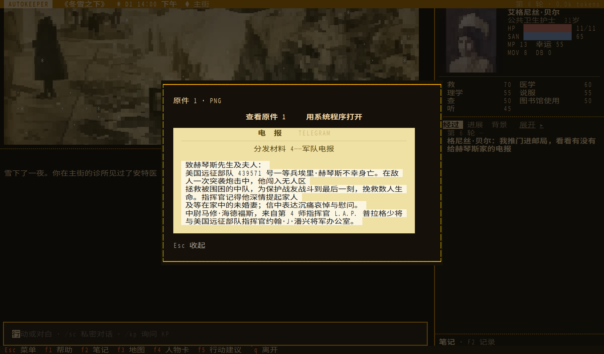
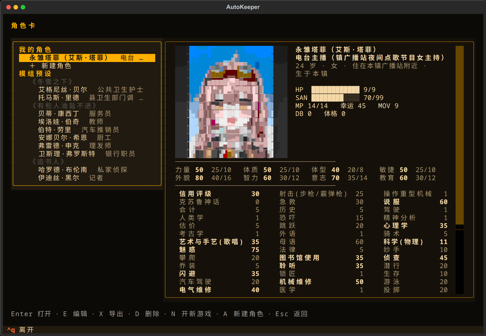
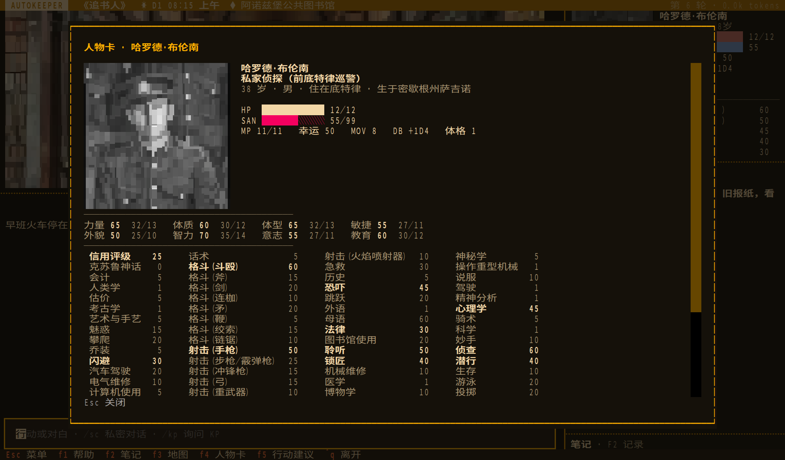
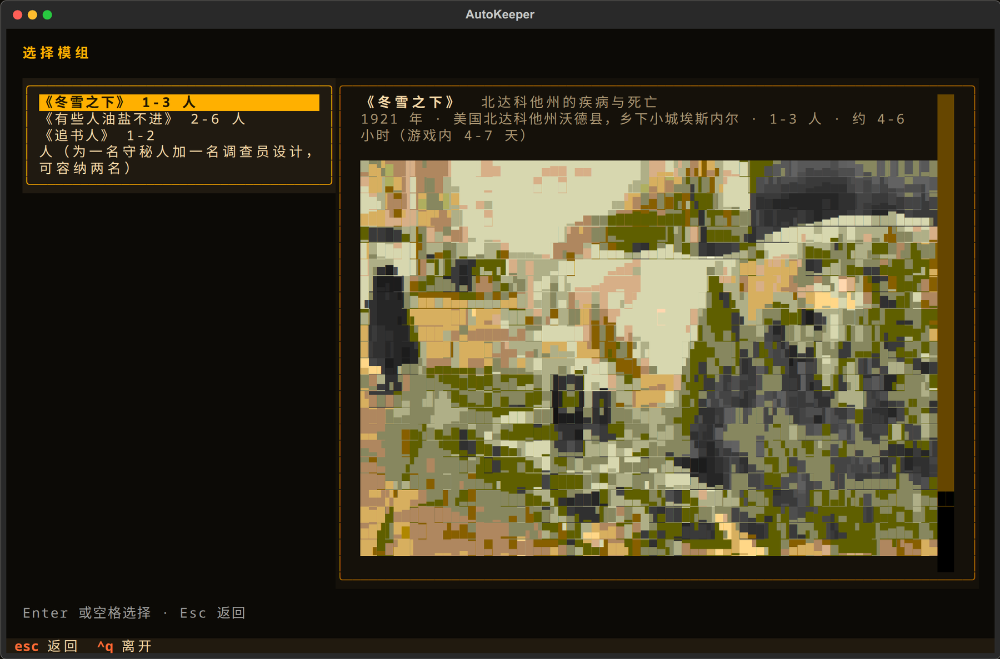
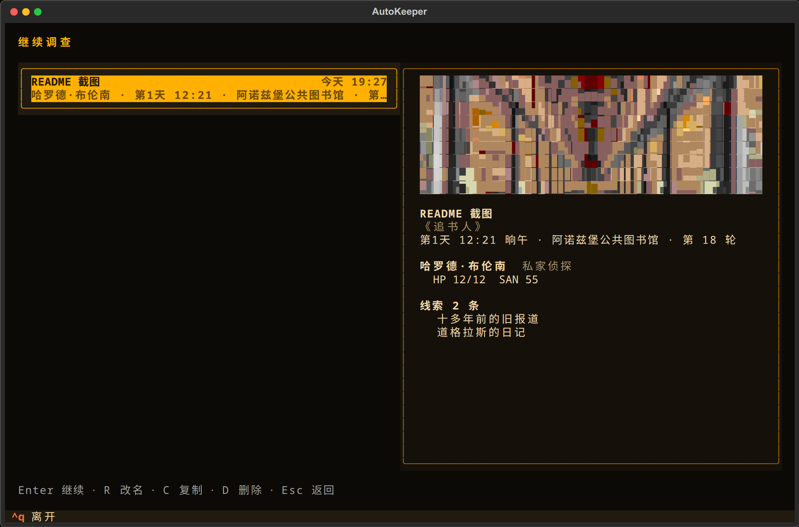
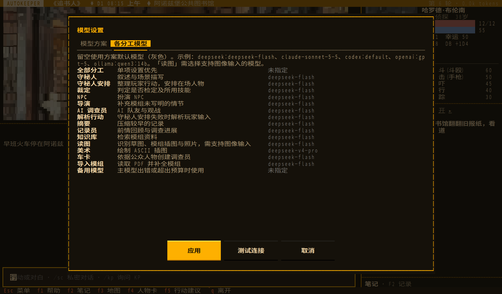
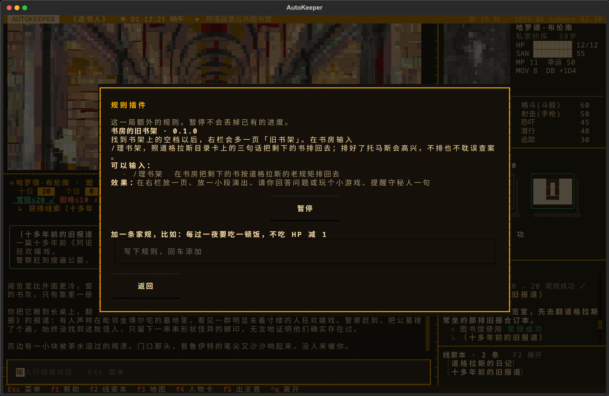
# Linux、macOS、WSLcurl -fsSL https://raw.githubusercontent.com/satoshinji2992/autokeeper/main/install.sh | bash
# Windows PowerShellirm https://raw.githubusercontent.com/satoshinji2992/autokeeper/main/install.ps1 | iex
autokeeper，在首次配置里选择模型、填写密钥。支持 DeepSeek、Claude、Codex、Ollama 和 OpenAI 兼容接口。autokeeper serve 可以在浏览器里玩。游戏和模型调用都在你自己的电脑上运行，这个网页只做介绍。更新时退出游戏、再运行一次安装命令即可，存档和设置都会保留。完整说明见游玩指南。